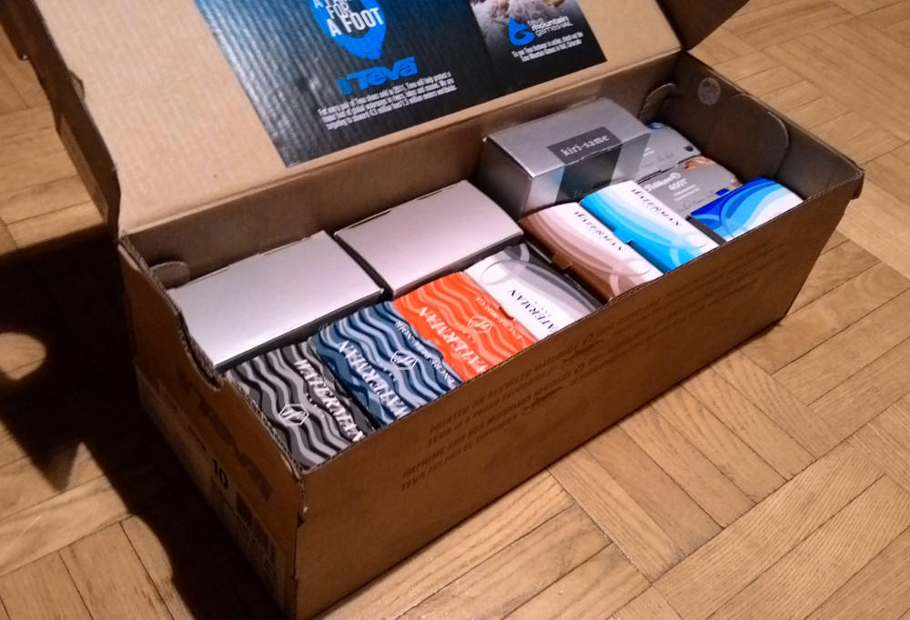

Ink
I have a fair collection of fountain pen inks. I've decided to make a quick and dirty test of each one of them, for posterity. Ideally, I'd like to make a review for each bottle I own, but also include some ink samples I've been fortunate to receive.

I have two shoe-boxes where I keep my inks. This one is from the very nice pair of Teva sandals I've been using for several years.
Bottled ink ↩
Caran d'Ache
Blue Night — almost empty
Grand Canyon
J. Herbin:
Larmes de Cassis
KWZ:
4303 Grapefruit
Pelikan:
4001 Royal Blue — empty now, no review unless I buy another bottle
4001 Blue Black
4001 Brilliant Brown
Edelstein Amethyst
Edelstein Sapphire
Pilot:
iroshizuku kiri-same
Sheaffer:
Skrip Black
Waterman:
(old) Encre Bleu-Noir (blue black)
(old) Encre Noir (black) — almost empty
(old) Encre Rouge (red)
Intense Black
Inspired Blue Serenity Blue
Absolute Brown
Ink samples and cartridges ↩
Pilot:
iroshizuku ina-ho
iroshizuku kosumosu
iroshizuku momiji iroshizuku tsuki-yo
iroshizuku tsukushi
iroshizuku yama-guri
iroshizuku yu-yake
{kind=link}